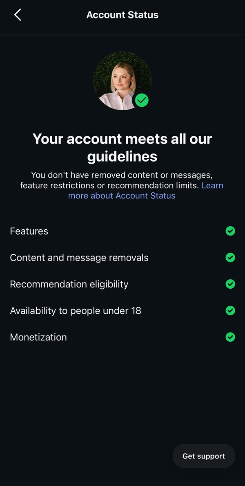

Where the word comes from
"Shadowban" started on online forums. Moderators could hide a troublemaker's posts from everyone else without telling them. The person kept posting and had no idea no one could see it.
People started using it for Instagram because reach drops felt the same way: sudden, silent, and unexplained. For years Instagram said shadowbans didn't exist, which only made people more suspicious.
What Instagram actually does
Instagram doesn't hide your posts from your followers. What it can do is stop recommending your content to people who don't follow you. That means you don't show up in places like Explore, Reels, suggested posts, search, or suggested accounts.
For most accounts, that's where new reach comes from. Lose it, and engagement can drop hard even though your followers can still see everything. That's the closest real thing to a shadowban.
How to check Account Status
Instagram moves things around often. If you don't see Account Status right away, use the search bar at the top of Settings and type "Account status."
This tells you whether your account and your content can be recommended to non-followers. If something can't be recommended, Instagram shows you a sample and which guideline it falls under.
The other rows are "Features" (limits on things like messaging), "Content and message removals," "Availability to people under 18," and "Monetization." A green check means nothing is flagged in that area. Anything without a green check is your starting point. Tap it to see what was flagged.
If a post was flagged, you can delete or edit it, or ask Instagram to review the decision. Instagram makes the final call. Nobody outside Meta can override it.
What a healthy account looks like
This is my own Account Status, taken October 2026. Every row has a green check, and the top line says the account meets all of Instagram's guidelines. If yours looks like this, you're not being limited. A drop in reach is coming from somewhere else.

If something is wrong, that row won't have a green check, and the top line won't say your account meets all the guidelines. Tap the row to see which post or rule it's about.
The three things that usually explain a reach drop
1. Your content can't be recommended. Account Status shows a flag. Common causes are borderline content, a past violation, or reposted content. One flagged post doesn't usually sink everything, but if the whole account is marked not recommendable, none of your posts will be suggested to new people.
2. You're posting the same content on more than one account. Instagram is cracking down on unoriginal content. As of 2026, an account whose posts are mostly someone else's content can stop being recommended, and that rule now covers photos and carousels, not just Reels. If you post the exact same thing on a main account and a backup or "secondary" page, the copies can look like reposts. Give each account its own content, or at least edit it in a real way before posting.
3. Nothing is actually wrong. Account Status is all green. The drop comes from weaker posts, a change in what Instagram shows people, or followers who aren't active anymore. That's a content problem, not a penalty, and it needs a content fix.
What not to do
Don't delete and re-post everything, buy followers, or switch to a brand-new account hoping to start fresh. None of those fix the cause. A new account often ends up linked to the old one anyway. And be careful with anyone who promises they can "remove" a shadowban. Only Instagram can change your status.